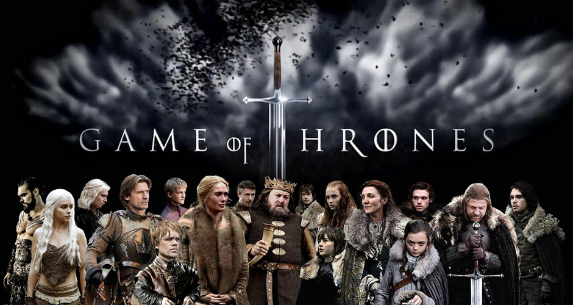

Öne Çıkanlar
Bu popüler dizinin en son sezonu olan 7.sezonun final incelemesine bir göz atalım.
Sezon finalinde etkileyici pek çok şey oldu ancak Cersei Lannister’a hayat veren Lena Headey’in performansı pek çok oyuncuyu geride bıraktı desek yeridir. Tüm düşmanların bir arada toplandığı Ejderha Çukuru’na en son teşrif ettiğini sanan Cersei’nin Daenerys’i huzursuzca beklediği sahneden tutun da Ak Gezenler’in zombilerinden biriyle karşılaştığı sahneye kadar Headey oyunculuğunu konuşturdu. Hemen hiçbir şeyden korkmayan Cersei’nin ona doğru koşan zombiye karşı korkusu yüzüne yansımışken, inatçılığından ise zerre bir şey kaybetmediği ortada...
En Yeniler

“The distinction between past present and future is only a stubbornly persistent illusion” – Albert Einstein
Sabırsızlıkla beklediğimiz ve ekranlara gelmesiyle birlikte kelimenin tam anlamıyla yalayıp yuttuğumuz Stranger Things, şüphesiz ki hem Netflix’in hem de ekranların son zamanlarda ortaya çıkmış en dikkat çekici yapımlarından. 80’li yılların sinemasına olan özlem mi yoksa sadece nostaljik havanın verdiği o haz mı bilmiyorum; her iki sezonu da yayınlanır yayınlanmaz bir gecede bitirenlerden biriyim ben de. Bir gecede bitiren ve ‘ee şimdi ne yapacağım?’ diye kendi kendine soran o kişilerdenim de aynı zamanda. İşte tam o sırada göz bebeğim Netflix imdadıma yetişti ve beni Dark ile tanıştırdı. Stranger Things’in havasını fazlasıyla bünyesinde barındıran Alman yapımı Dark, tam da alternatif evrenler, zaman döngüsü ve 80’lerin atmosferini sevenlere göre… Almanya sınırlarına gelen ve bize oldukça başarılı bir yapım sunan Netflix için bu konuda da kendine hayran bıraktı desek yanlış olmaz sanırım. “Asıl soru nerede değil, ne zaman!” Bir kayıp çocuk, karanlık sırlarla örülü bir Alman kasabası ve çarpık ilişkilerle sarmalanmış aileler… Baran bo Odar ile Jantje Friese’ın yaratıcılığını üstlendiği, çekimleri Berlin’de gerçekleşen Dark, karanlık ve gizemli havasıyla bizleri adeta kendi içine bir mıknatıs gibi çekiyor. Geçtiğimiz yıl Oscar yarışında izlediğimiz filmlerden biri olan Danimarka yapımı Land of Mine filmiyle tanıdığımız 20 yaşındaki Louis Hofmann‘ı başrolde gördüğümüz Dark, bizi 2019 ile 1986 arasında gizemli bir yolculuğa çıkarıyor.
Bizim Önerdiklerimiz
Scooby Doo ile Supernatural'ın ortak bölüm yaptığını biliyor muydunuz?
The CW kanalında ekrana gelen Supernatural oldukça uzun zamandır devam ediyor. Kahramanlarımız Sam ve Dean Winchester doğa üstü güçlere karşı mücadele vermeye ve karanlığın dünyayı ele geçirmesine engel olmaya çabalıyor. On üçüncü sezona ulaşan dizi yakın gelecekte son bulacakmış gibi görünmüyor. Aksine artık Supernatural’ı seyretmekten vazgeçenleri tekrar ekran başına çekmenin yolunu arıyor gibi görünüyor. Bu isteğin sonucunda da ScoobyNatural bölümü ortaya çıkmış gibi görünüyor. Sıradan rutinlerine biraz ara vermek isteyen Sam ve Dean kendilerini sevdikleri çizgi filmlerden biri olan Scooby Doo‘nun içinde buluyor. Kardeşler bir yandan o bölümün gizemini çözmeye bir yandan da hapsoldukları bu çizgi film dünyasından kurtulmaya çabalıyor. Bu süreçte Winchesterlar ve Scooby Doo ekibi de iyice kaynaşıyor.